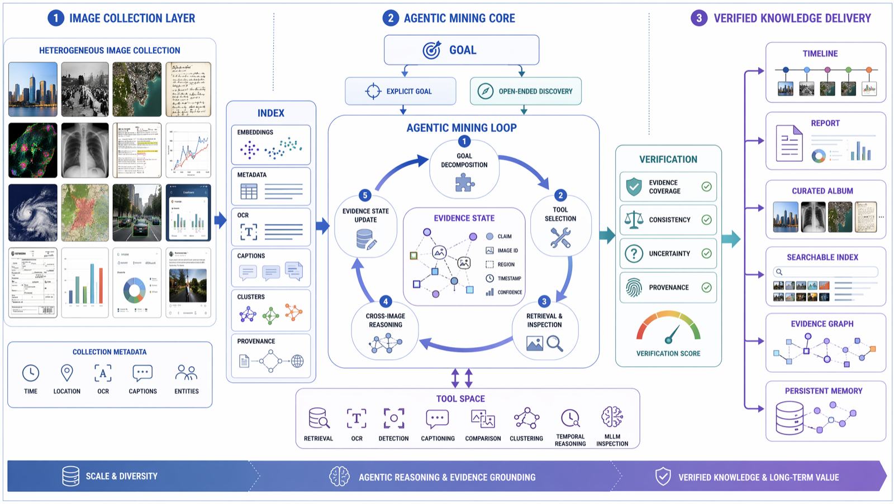

Visual Macroscopic Intelligence (VMI)
VMI is the capability of converting large, weakly structured visual contexts into grounded, reusable, and actionable knowledge.
Rather than understanding each image in isolation, VMI emphasizes discovering macroscopic structures across images—entities, events, temporal-spatial relations, evidence links, dialogue coherence, and memory—before producing answers, reports, timelines, or other knowledge artifacts.
Large visual contexts
Latent evidence structures
Agentic reasoning
Grounded knowledge
Conversational retrieval
